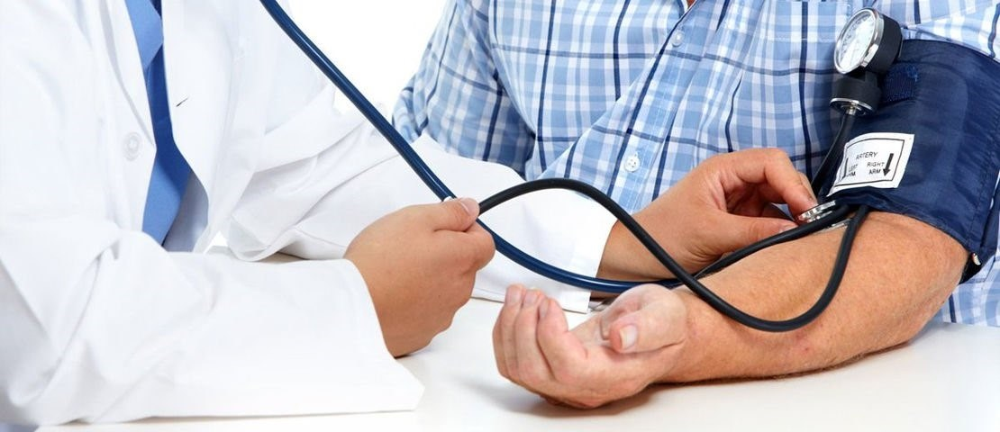
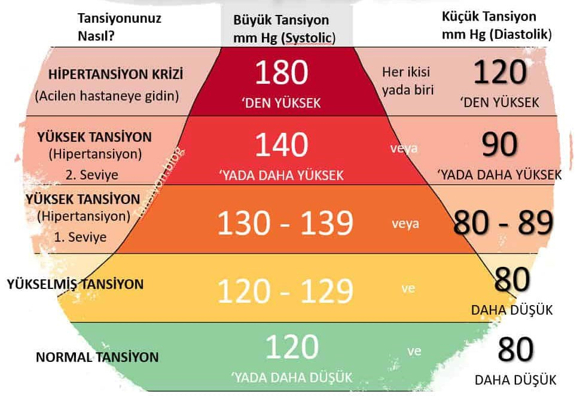
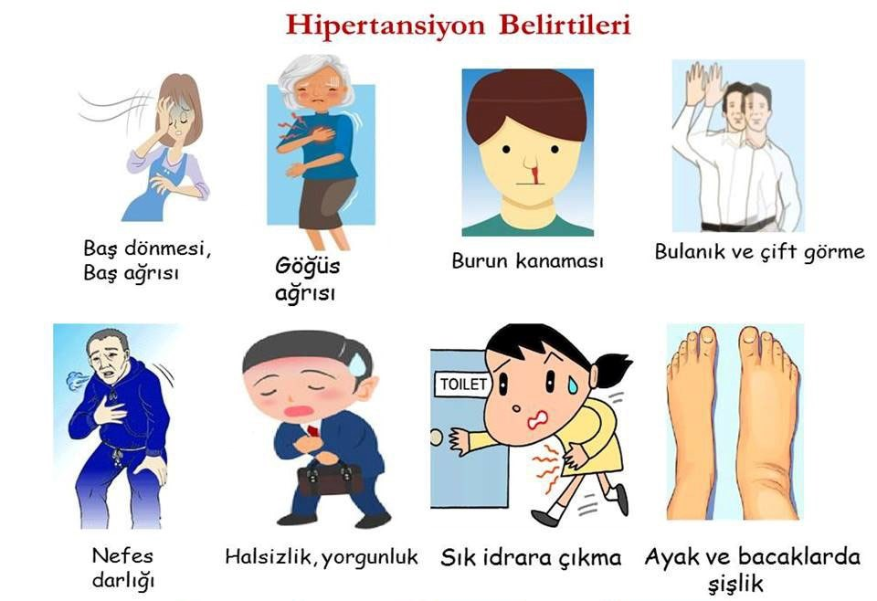

HİPERTANSİYONUN FARKINDA MISINIZ?
Hipertansiyon, kalp-damar hastalıkları risk faktörleri arasında en önde gelen ve en yaygın olanıdır. Kıtalar ve bölgeler arasında farklar olmak üzere -2000 yılı itibariyle- dünya genelinde 20 yaş üzerindeki erişkin nüfusun yüzde 26.4’ünün hipertansiyonu vardır ve bu oranın 2025 yılında yüzde 29.2’ye çıkacağı öngörülmüştür (1,2). Bir diğer deyişle, halen 972 milyon insanın hipertansiyonu vardır ve 25 yıl sonra bu rakam 1.5 milyarı aşacaktır.
Hipertansiyon dünya genelinde tek başına inme, kalp krizi, böbrek hastalıkları ve diyabete neden olan en büyük ölüm sebebidir.
Hipertansiyonun farkında olmamızın gerekliliği önlenebilir, tanı konulabilir, tedavi edilebilir olmasından kaynaklanmaktadır.
Tansiyon nedir; tansiyon kalpten vücuda pompalanan kanın damar duvarına yaptığı basınçtır.
Kan basıncı, kanı dolaşım sistemimizden geçiren kuvvettir.
Bu önemli bir güçtür, çünkü kan basıncı olmadan doku ve organları beslemek için oksijen ve besinler dolaşım sistemimizin etrafına itilmeyecektir.
Kalbin attığı an atardamarlarınızda oluşan basınç (sistolik basınç) büyük tansiyon,
Kalp kasının gevşemesiyle atardamarınızdaki(arterlerinizdeki ) basıncın (diyastolik basınç-) küçük tansiyonu ifade eder.
Tansiyon borularda oluşan suyun basıncına benzer, basıncın artması borularda hasara ve sızıntılara yol açıyorsa ani tansiyon yükselmesi de damarlarda hasara yol açacaktır. Hasar gören damar burun kılcal damarı ise bunun adı basit bir burun kanaması olacaktır, hasar gören damar başka bir organda ise, örneğin beyinde ise bunun adı beyin kanaması olacaktır sağlık sonuçları da burun kanamasından farklı olacaktır.
Hipertansiyon ve ani tansiyon yükselmesini belirlemek tansiyon ölçtürmek kadar basittir.
Tansiyonun Sınıflandırılması
Ölçülen tansiyon değerleri aşağıdaki sınıflamaya göre değerlendirilip, sınıflama yapılır. Hipertansiyon sınıfına giren ölçüm değerleri ileri tetkik ve tedavi gerektirir.
Tek ölçümde tansiyon yüksekliği hipertansiyon tanısı koydurmaz.
Ani Tansiyon Yükselmesi
Ani tansiyon yükselmesi tansiyon hastası olmayan kişilerde de gözlemlenebilen genellikle altta yatan tetikleyici bir sebep bulunan ciddi bir durumdur.
Yüksek stres, tartışma, öfkelenme, üzüntü, yüksek tuz tüketimi, yüksek miktar kafein alımı gibi sebepler ani olarak tansiyon yükselmesine sebep olabilir. Ani tansiyon yükselmesi tıbbi tedavi gerektirir.
Tek ölçümde tansiyonum yüksek çıktı ne yapmalıyım?
Ölçülen tansiyonunuz yüksek ise mutlaka bir sağlık biriminden destek almayı unutmayın.7 günlük sabah ve akşam mümkünse aynı saatlerde tansiyonunuzu ölçtürün ve kayıt altına alın, ölçüm sonuçlarınızla birlikte aile hekiminize veya işyeri hekiminize kontrol olun.
Beyaz Önlük Hipertansiyonu
Sağlık biriminde ölçtürdüğünüz sonuçlar heyecanlanmaya bağlı olarak yüksek ve evde ölçülen değerler normal geliyorsa beyaz önlük hipertansiyonundan bahsedebiliriz.
Evde Tansiyon Ölçümü ve Tansiyon Takibi Nasıl Yapılmalı
Hipertansiyon hastalarının her gün tansiyonunu ölçüp takip defterine yazması, doktorun tansiyonun seyrine bakıp tedaviyi ona göre düzenlemesi açısından çok önemlidir.
Evde tansiyon ölçerken aşağıdaki konulara dikkat edilmelidir.
- Tansiyonunuzu her gün aynı saatte, örneğin her sabah ve akşam aç karnına ve tansiyon ilaçlarını almadan önce ölçün.
- ölçümden önce 5 dakika dinlenin.
- Rahatsız, tedirgin, stresli olduğunuzda, üşüdüğünüzde veya ağrınız olduğunda tansiyonunuzu ölçmeyin.
- Yemekten sonra en az iki saat, kahve veya sigara içtikten sonra en az yarım saat bekleyin.
- ölçümden önce gerekirse mesane ve bağırsaklarınızı boşaltın.
- Kan basıncı ölçüm aletinin manşonu ile kol çevresi uyumlu olmalıdır. Kol çevreniz aletin manşon boyutundan geniş ise kan basıncınız olduğundan yüksek, dar ise olduğundan düşük ölçülür.
- Kolunuzdan tüm giysilerinizi çıkartın ve kolunuzu sıkmayacak bir giysi tercih edin.
- Sırtınızı destekleyen ve yanında kolunuzun altına destek olacak kolluk veya masa gibi bir mobilyanın bulunduğu sert bir sandalyeye dik oturun.
- Kolunuzun altına kalp hizasına gelmesini sağlamak için bir yastık yada havlu koyun.
- Ayaklarınızı yere basın ve bacak bacak üstüne atmayın.
Hipertansiyon Farkındalık Adımları Önerileri
1-ölçtürmeden Bilemezsin; Hipertansiyon teşhisi koymak tansiyon ölçümü yapmak kadar basittir.
Tansiyonunuzu ölçtürmek için yükselmesini, sağlık şikayetinizin olmasını beklemeyin,
Normal tansiyonunuzu yani sizi ayakta tutan sizi iyi hissettiren tansiyon değerinizi öğrenmek için kendinizi iyi hissettiğiniz bir zaman diliminde sağlık servisinde tansiyonunuzu ölçtürün.
ölçülen değer sizin sağlık şikayeti hissetmediğiniz tansiyon değerleri olup üzeri ve altındaki değerler sizde sağlık şikayeti oluşturabilir.
ölçülen değer yüksek ise hipertansiyon açısından ileri tetkik ve tedavi gerekebilir.
2-Hipertansiyon ve hipertansiyon atağı işaretlerini öğrenin
- Baş ağrısı: özellikle ani başlangıçlı, sıklıkla ense kökünden başlayan, kafa üst kısmı tutabilen bir ağrı.
- Burun Kanaması: burun içi kılcal damarları hipertansiyonda artan damar içi basınca dayanamayıp çatlayıp kanayabilmektedir.
- Bulanık görme: Ani başlangıçlı bulanık görme ani tansiyon yükselmesine bağlı olabilmektedir.
- Baş dönmesi: birçok sebebi olmakla birlikte ani tansiyon değişiklerinde sık görülür
- Mide bulantısı: sıklıkla baş ağrısına eşlik eden bulantı hissi ani tansiyon yükselmelerinde görülebilmektedir.
3- HİPERTANSİYONUN FARKINDA OLUN KONTROLü ELDEN BIRAKMAYIN. Kan Basıncınızı Kontrol Altında Tutun
- Düzenli fiziksel aktivite ; 2013 yılında yapılan bir çalışmada, aerobik egzersiz eğitimine katılan hareketsiz yaşlı yetişkinler kan basınçlarını ortalama yüzde 3,9 sistolik ve yüzde 4,5 diyastolik düşürdü(1)
- Fazla kilolarınızdan kurtulun; kilo verme diyetlerinin kan basıncını ortalama 3,2 mm Hg diyastolik ve 4,5 mm Hg sistolik azalttığını bildirdi(2)
- Düşük karbonhidratlı beslenme; Düşük karbonhidrat diyetleri ve kalp hastalığı riskinin 2012 analizi, bu diyetlerin kan basıncını ortalama 3,10 mm Hg diyastolik ve 4,81 mm Hg sistolik düşürdüğünü buldu(3)
- Tuz alımınızı azaltın, potasyum alımınızı artırın; Potasyum alımınızı artırmak ve tuzu azaltmak da kan basıncınızı düşürebilir Potasyum çifte kazanandır: Tuzun sisteminizdeki etkilerini azaltır ve ayrıca kan damarlarınızdaki gerginliği azaltır. Bununla birlikte, potasyum yönünden zengin diyetler böbrek hastalığı olan kişiler için zararlı olabilir , bu nedenle potasyum alımınızı artırmadan önce doktorunuzla konuşun.(4)
- İşlenmiş gıdalardan uzak durun; İşlenmiş yiyecekleri azaltmak - hatta daha iyisi, kesmek - daha az tuz, daha az şeker ve daha az rafine karbonhidrat yemenize yardımcı olacaktır. Tüm bunlar kan basıncının düşmesine neden olabilir.(5)
- Sigarayı Bırakın; Sigarayı bırakmak, her yönüyle sağlığınız için iyidir. Sigara içmek kan basıncınızda ani fakat geçici bir artışa ve kalp atış hızınızda bir artışa neden olur.(6)
- Aşırı stresten kurtulun; Kendi stresinizi azaltmanın yollarını bulmak , sağlığınız ve tansiyonunuz için önemlidir.Stresi başarılı bir şekilde gidermenin birçok farklı yolu vardır , bu yüzden sizin için neyin işe yaradığını bulun.( Yoga ve kan basıncı üzerine 2013 yılında yapılan bir inceleme, egzersiz yapmayanlara kıyasla ortalama kan basıncında 3,62 mm Hg diyastolik ve 4,17 mm Hg sistolik düşüş olduğunu buldu. Nefes kontrolü, duruşlar ve meditasyon içeren yoga uygulamaları çalışmaları, bu öğelerin üçünü de içermeyen yoga uygulamalarından neredeyse iki kat daha etkiliydi )(7)
- İyi ve dinlendirici bir uyku aldığınızdan emin olun; Tansiyonunuz tipik olarak uyurken düşer. İyi uyumazsanız kan basıncınızı etkileyebilir. Uykusuzluk yaşayan kişilerde , özellikle orta yaşlı kişilerde yüksek tansiyon riski artmıştır(8)
- Alkol tüketiminizi azaltın; ölçülü içmek önemlidir. Alkol, tüketilen her 10 gram alkol için kan basıncınızı 1 mm Hg artırabilir.(9)
Hipertansiyonun farkında olmamızın gerekliliği önlenebilir, tanı konulabilir, tedavi edilebilir olmasından kaynaklanmaktadır.
Sağlıkla Kalın.
Dr. Gökhan YENER
Kaynaklar
- https://onlinelibrary.wiley.com/doi/abs/10.1111/j.1440-1681.2006.04452.x
- https://www.tandfonline.com/doi/full/10.3109/08037051.2013.778003
- https://www.cochranelibrary.com/cdsr/doi/10.1002/14651858.CD008274.pub3/full
- https://onlinelibrary.wiley.com/doi/abs/10.1111/j.1467-789X.2012.01021.x
- https://e-bp.org/DOIx.php?id=10.5049/EBP.2014.12.1.7
- https://www.fda.gov/food/nutrition-education-resources-materials/sodium-your-diet
- https://www.ahajournals.org/doi/10.1161/01.HYP.37.2.187
- https://www.hindawi.com/journals/ecam/2013/649836/
- https://www.ncbi.nlm.nih.gov/pmc/articles/PMC5449130/
- https://onlinelibrary.wiley.com/doi/abs/10.1111/j.1440-1681.2006.04452.x